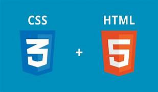

HTML/CSS
In dieser Woche haben wir viel über die erstellung von Websiten gelernt.
HTML/CSS
In meiner Ausbildung am ZLI habe ich HTML und CSS gelernt. HTML ist die Grundlage für jede Webseite, CSS sorgt für das Aussehen. Ich habe auch gelernt, wie man Links auf Webseiten erstellt, damit die Benutzer schnell zu bestimmten Bereichen der Seite kommen.
Der Einsatz von Flexboxen und CSS Grids war nicht einfach. Diese Technologien sind wichtig, damit Webseiten auf verschiedenen Bildschirmen gut aussehen. Am Anfang war es schwer für mich, zu verstehen, wie diese Layoutmethoden funktionieren. Ich habe aber Fortschritte gemacht, weil ich geübt und Aufgaben bearbeitet habe.
Ich musste auch ein passendes CSS-Framework auswählen. Ich habe mich für Materialize entschieden, weil es viele Vorlagen bietet und besonders für Anfänger leicht zu verstehen ist. Ich arbeite jetzt effizienter und kann moderne Designs schneller umsetzen.
Ich habe viel über die Erstellung und Gestaltung von Webseiten gelernt, weil ich am ZLI mit HTML und CSS arbeite. Ich würde in Zukunft mehr Zeit für die Planung des Layouts einplanen, um den Designprozess zu optimieren. Trotz einiger Probleme konnte ich meine Aufgaben selbstständig lösen.Fazit